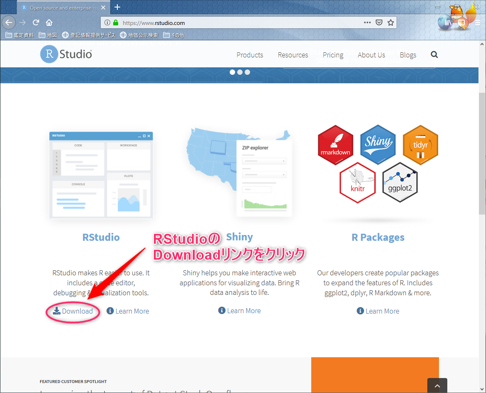
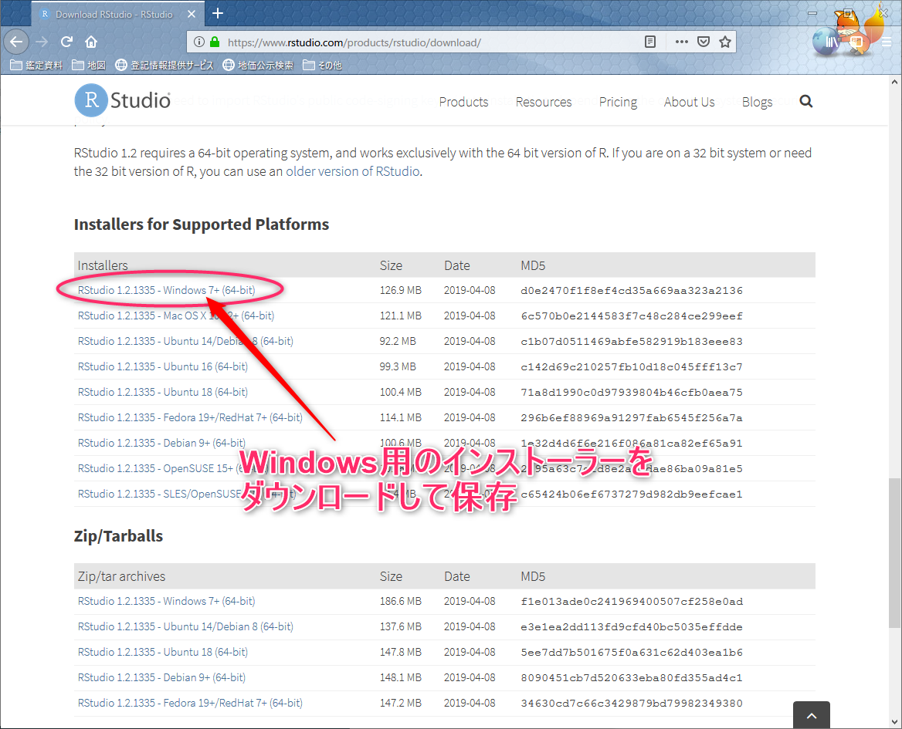
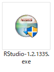
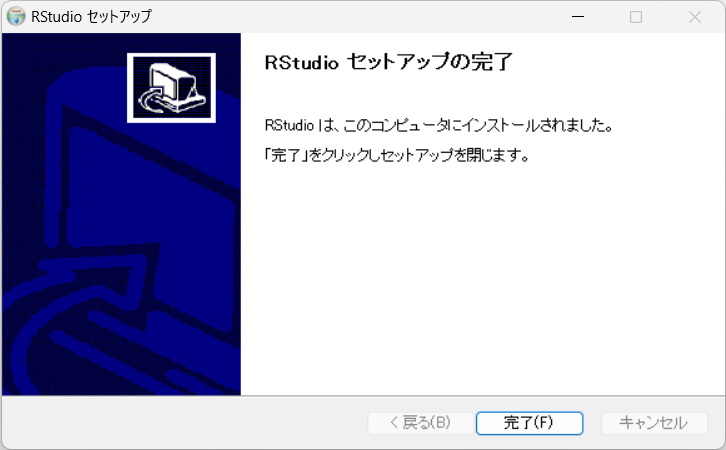

3 RStudioのインストール
Rの統合開発環境（IDE）であるRStudioのインストールを紹介します。
3.1 RStudio
RStudioのWebページでは、 IDEだけでなく Rで人気のパッケージの開発も行われており、 それらの情報も、このWebページから辿ることが出来ます。
Figure 3.1: https://www.rstudio.com/
3.2 セットアップファイルのダウンロード
トップページを少し下へスクロールするとRStudioのダウンロードリンクがある（図3.2）ので、 それをクリックしてダウンロードページへ行きます。

Figure 3.2: ダウンロードページへのリンク
切り替わったページ（図3.3）の初めの方は、RStudioのライセンス形態についての紹介がされているので下の方へスクロールしましょう。

Figure 3.3: ダウンロードページ
下の方でInstallers for Supported Platformsという項目がみつかります。
そこに各ＯＳ毎のインストールファイルへのリンクがあります。(図3.4) Windows用のインストーラーリンクをクリックして、インストーラーを保存しましょう。

Figure 3.4: Windows用インストーラーのダウンロード
3.3 インストール
ダウンロードされたセットアップファイル「RStudio-1.2.1335.exe」をダブルクリックします。 （ファイル名の数字はバージョンで時期により異なります）

Windwosのデバイスに変更を加える注意のダイアログに答えると、セットアップが始まります。
3.3.5 インストールが完了します。
暫くすると、インストール完了のダイアログがでるので「完了」をクリックして、インストールを完了させましょう。（図3.9）

Figure 3.9: install dialog: 完了